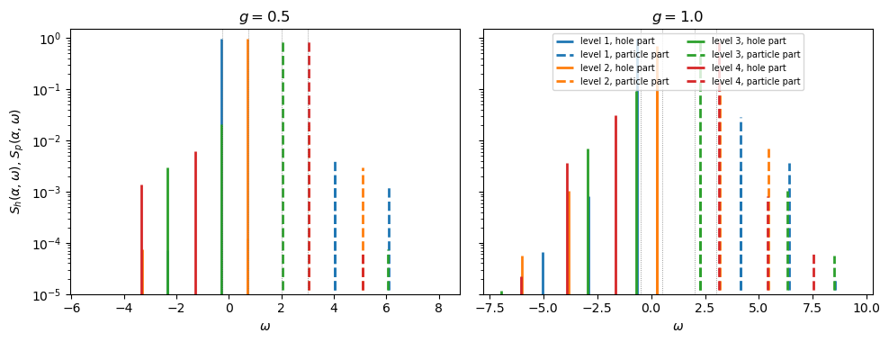
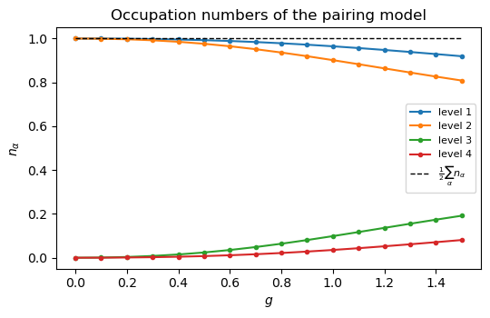
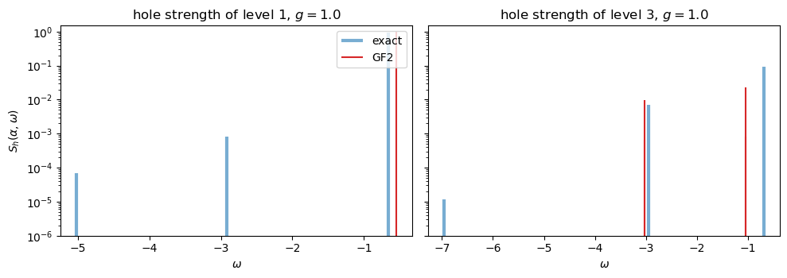
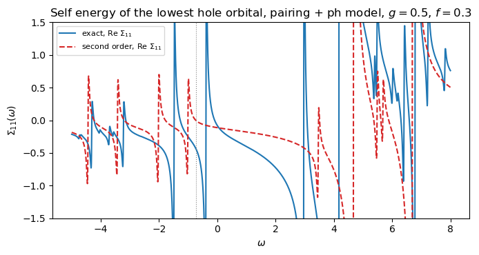
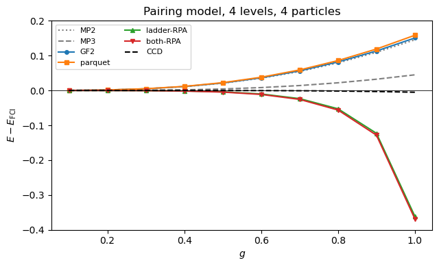
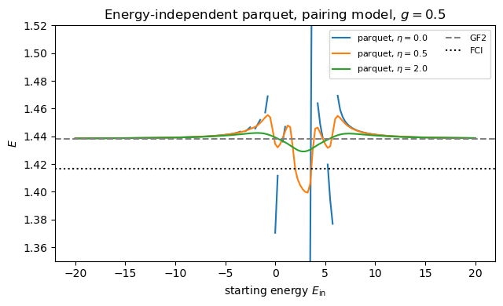
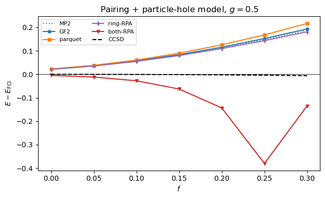
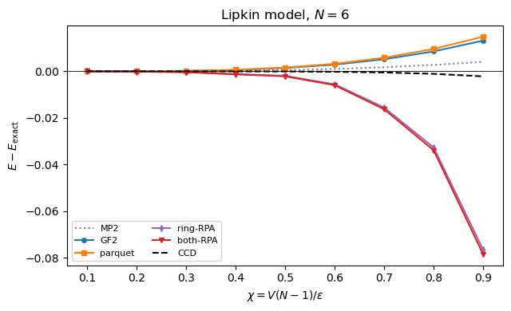
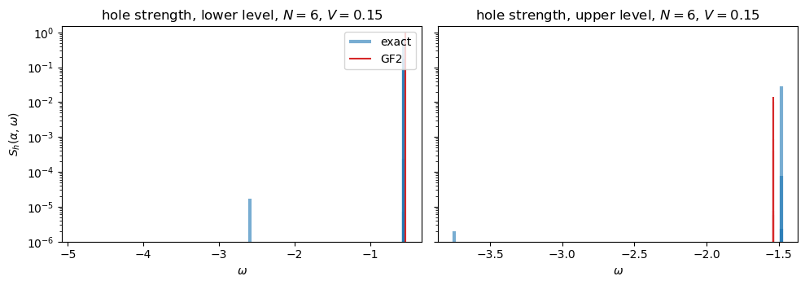

12. Green’s functions#
Companion notebook to the chapter Green’s functions of Quantum mechanics
for many-particle systems. Every number quoted in the chapter is produced
here; the code is the same as in
BookManybody/BookPrograms/chaptergreenfunction/greensfunction.py, which
builds on coupledcluster.py (chapter 10), mbpt.py (chapter 9) and
models.py (chapter 4).
The object of the chapter is the one-body propagator
its spectral functions, the sum rule that gives the ground-state energy from it, the Dyson equation \(g=g^{0}+g^{0}\Sigma g\), and the parquet resummation of the interaction vertex \(\Gamma=I+L+R\) that feeds the self energy.
Contents:
The exact propagator from full configuration interaction
The second-order self energy and the Dyson equation
The two channels of the parquet equations are the two RPAs of chapter 7
Perturbative content
The pairing model: everything against everything
The starting energy and the parameter \(\eta\)
The pairing plus particle-hole model
The Lipkin model
Quasiparticle self-consistency
import sys, os, glob
import numpy as np
import matplotlib.pyplot as plt
import warnings
warnings.filterwarnings("ignore")
# the chapter programs live in BookPrograms/chapterNN; put them all on the path
for _d in sorted(glob.glob(os.path.join("..", "BookManybody",
"BookPrograms", "chapter*"))):
if _d not in sys.path:
sys.path.insert(0, _d)
import coupledcluster as cc
import greensfunction as gf
np.set_printoptions(precision=6, suppress=True, linewidth=120)
12.1. 1. The exact propagator from full configuration interaction#
For a small model we can diagonalise \(\hat H\) in the \(N\)-, \((N+1)\)- and
\((N-1)\)-particle spaces and build the Lehmann representation directly. The
class LehmannPropagator stores the removal and addition amplitudes
\(\langle\Psi_k^{N-1}|a_\alpha|\Psi_0^N\rangle\) and
\(\langle\Psi_n^{N+1}|a_\alpha^\dagger|\Psi_0^N\rangle\) with their energies.
Three checks of the chapter’s formulas: the sum rule \(n_\alpha+d_\alpha=1\),
the energy-weighted sum \(\sum_\alpha\int\omega S_h=\langle\hat H_1\rangle+2\langle\hat V\rangle\),
and the Migdal-Galitskii-Koltun sum rule, which must return the exact
ground-state energy.
gf.demo_lehmann()
The exact propagator of the pairing model (4 levels, 4 particles)
g = 0.5: E_FCI = 1.4167742844 sum rule = 1.4167742844
occupation numbers n_alpha [0.992508 0.992508 0.976029 0.976029 0.023971 0.023971 0.007492 0.007492]
n_alpha + d_alpha [1. 1. 1. 1. 1. 1. 1. 1.]
sum_alpha int omega S_h = 0.74065623 = <H_1> + 2<V>, <H_1> = 2.09289234, hence <V> = -0.67611806
removal energies [ 0.694 0.694 -0.2832 -0.2832 -0.2896 -0.2896] ...
g = 1.0: E_FCI = 0.6355484736 sum rule = 0.6355484736
occupation numbers n_alpha [0.964563 0.964563 0.901427 0.901427 0.098573 0.098573 0.035437 0.035437]
n_alpha + d_alpha [1. 1. 1. 1. 1. 1. 1. 1.]
sum_alpha int omega S_h = -1.13866935 = <H_1> + 2<V>, <H_1> = 2.40976629, hence <V> = -1.77421782
removal energies [ 0.2483 0.2483 -0.6591 -0.6591 -0.6873 -0.6873] ...
The Lipkin model, N = 4, V = 0.3
E_FCI = -2.2538855339 sum rule = -2.2538855339
occupation numbers [0.943678 0.943678 0.943678 0.943678 0.056322 0.056322 0.056322 0.056322]
The hole and particle spectral functions of the pairing model. Every bar is one eigenstate of the \((N\mp1)\)-particle system; its height is the spectroscopic factor \(|\langle\Psi_k^{N-1}|a_\alpha|\Psi_0^N\rangle|^2\). In the independent-particle limit each orbital has a single bar of height one at its Hartree-Fock energy; the interaction moves the main bars and spreads strength into satellites. Note the vertical log scale: the satellites carry a few parts in a thousand of the strength.
fig, axes = plt.subplots(1, 2, figsize=(10, 3.9), sharey=True)
for ax, g in zip(axes, (0.5, 1.0)):
h, v, N = cc.pairing_model(levels=4, particles=4, g=g)
lp = gf.LehmannPropagator(h, v, N)
em, Sh = lp.hole_strength()
ep, Sp = lp.particle_strength()
colors = ["C0", "C1", "C2", "C3"]
for level in range(4):
a = 2 * level # the (level, +) spin orbital
mask = Sh[:, a] > 1e-6
ax.vlines(em[mask], 1e-6, Sh[mask, a], color=colors[level], lw=2,
label=f"level {level + 1}, hole part")
mask = Sp[:, a] > 1e-6
ax.vlines(ep[mask], 1e-6, Sp[mask, a], color=colors[level], lw=2,
ls="--", label=f"level {level + 1}, particle part")
eps = np.diag(cc.fock_matrix(h, v, N))
for e in eps[::2]:
ax.axvline(e, color="gray", lw=0.6, ls=":")
ax.set_yscale("log")
ax.set_ylim(1e-5, 1.5)
ax.set_xlabel(r"$\omega$")
ax.set_title(f"$g={g}$")
axes[0].set_ylabel(r"$S_h(\alpha,\omega)$, $S_p(\alpha,\omega)$")
axes[1].legend(fontsize=7, ncol=2, loc="upper center")
plt.tight_layout()
plt.show()

The occupation numbers \(n_\alpha=\int S_h(\alpha,\omega)d\omega\) as a function of \(g\): the hole levels are depleted, the particle levels populated, and the total stays at four particles.
gs = np.linspace(0.0, 1.5, 16)
occ = []
for g in gs:
h, v, N = cc.pairing_model(levels=4, particles=4, g=g)
occ.append(gf.LehmannPropagator(h, v, N).occupation()[0][::2])
occ = np.array(occ)
fig, ax = plt.subplots(figsize=(5.5, 3.6))
for level in range(4):
ax.plot(gs, occ[:, level], "o-", ms=3, label=f"level {level + 1}")
ax.plot(gs, occ.sum(1) / 2, "k--", lw=1, label=r"$\frac{1}{2}\sum_\alpha n_\alpha$")
ax.set_xlabel("$g$")
ax.set_ylabel(r"$n_\alpha$")
ax.set_title("Occupation numbers of the pairing model")
ax.legend(fontsize=8)
plt.tight_layout()
plt.show()

12.2. 2. The second-order self energy and the Dyson equation#
With the self energy in pole form, \(\Sigma_{\alpha\beta}(\omega)=\Sigma^{(1)}_{\alpha\beta}+\sum_s M^{L}_{s\alpha}M^{R}_{s\beta}/(\omega-E_s)\), the Dyson equation is equivalent to the eigenvalue problem of the extended matrix with the Fock matrix in the upper-left block, the coupling vectors in the off-diagonal blocks and the pole energies on the lower-right diagonal. Its eigenvalues are the poles of \(g\) and the top components of its eigenvectors the spectroscopic amplitudes. With \(\Gamma=V\) the poles are the \(2p1h\) and \(2h1p\) energies and the method is the second-order Green’s function (GF2). The static part of the self energy is rebuilt from the correlated density matrix until the energy is converged.
gf.demo_second_order()
The second-order self energy and the Dyson equation, pairing model
48 poles of Sigma^(2); 2p1h poles at [3.25 4.25 5.25 6.25] 2h1p poles at [-3.5 -2.5 -1.5 -0.5]
exact removal energies with strength > 1e-3 [ 0.694 0.694 -0.2832 -0.2832 -0.2896 -0.2896 -1.2832 -1.2832 -2.3522 -2.3522 -3.3407 -3.3407]
Dyson(GF2) removal energies, strength > 1e-3 [-2.514 -2.514 -1.5138 -1.5138 -0.5245 -0.5245 -0.2723 -0.2723 0.7147 0.7147]
exact occupation [0.99251 0.99251 0.97603 0.97603 0.02397 0.02397 0.00749 0.00749]
Dyson(GF2) [0.9955 0.9955 0.9874 0.9874 0.0126 0.0126 0.0045 0.0045]
E_FCI = 1.41677428 E(GF2) = 1.43820334 cycles of the static self-consistency: 5
The exact hole spectral function against the GF2 one for the lowest hole level and the lowest particle level of the pairing model at \(g=1\). For the hole level GF2 has the quasiparticle peak only: the pure pairing interaction has no \(2h1p\) poles for a hole orbital (a hole and a particle never form a time-reversed pair), so the exact satellites are of higher order. For the particle level the hole strength – its occupation – sits at the \(2h1p\) energies, which GF2 has.
g = 1.0
h, v, N = cc.pairing_model(levels=4, particles=4, g=g)
lp = gf.LehmannPropagator(h, v, N)
res = gf.green_function_energy(h, v, N, scheme="gf2")
sol = res["dyson"]
fig, axes = plt.subplots(1, 2, figsize=(10, 3.6), sharey=True)
for ax, a in zip(axes, (0, 4)):
em, Sh = lp.hole_strength()
mask = Sh[:, a] > 1e-7
ax.vlines(em[mask], 1e-7, Sh[mask, a], color="C0", lw=3, alpha=0.6, label="exact")
w = sol["poles"].real[sol["holes"]]
S = sol["strength"].real[sol["holes"], a]
mask = S > 1e-7
ax.vlines(w[mask] + 0.03, 1e-7, S[mask], color="C3", lw=1.5, label="GF2")
ax.set_yscale("log")
ax.set_ylim(1e-6, 1.5)
ax.set_xlabel(r"$\omega$")
ax.set_title(f"hole strength of level {a // 2 + 1}, $g={g}$")
axes[0].set_ylabel(r"$S_h(\alpha,\omega)$")
axes[0].legend()
plt.tight_layout()
plt.show()

The self energy itself can be extracted from the exact propagator, \(\Sigma(\omega)=\omega-F-g(\omega)^{-1}\), and compared with the second-order one. Both have poles at the \(2p1h\) energies above the Fermi level and at the \(2h1p\) energies below it; the exact one has more of them and its poles are shifted. Shown is the diagonal element of the lowest hole orbital of the pairing plus particle-hole model, where the self energy is not diagonal.
h, v, N = cc.pairing_ph_model(levels=4, particles=4, g=0.5, f=0.3)
hh, vv, C, _ = cc.hartree_fock(h, v, N)
F = cc.fock_matrix(hh, vv, N)
eps = np.diag(F)
lp = gf.LehmannPropagator(hh, vv, N)
E2, ML2, MR2 = gf.self_energy_poles(vv, vv, eps, N)
omegas = np.linspace(-5, 8, 2600)
exact = np.array([gf.exact_self_energy(lp, F, w, eta=0.02)[0, 0] for w in omegas])
second = np.array([gf.self_energy(w + 0.02j, F, E2, ML2, MR2)[0, 0] for w in omegas])
fig, ax = plt.subplots(figsize=(7, 3.8))
ax.plot(omegas, exact.real, "C0", label=r"exact, Re $\Sigma_{11}$")
ax.plot(omegas, second.real + F[0, 0] - F[0, 0], "C3--", label=r"second order, Re $\Sigma_{11}$")
ax.set_ylim(-1.5, 1.5)
ax.axvline(eps[0], color="gray", ls=":", lw=0.8)
ax.set_xlabel(r"$\omega$")
ax.set_ylabel(r"$\Sigma_{11}(\omega)$")
ax.set_title("Self energy of the lowest hole orbital, pairing + ph model, $g=0.5$, $f=0.3$")
ax.legend(fontsize=8)
plt.tight_layout()
plt.show()

12.3. 3. The two channels of the parquet equations are the two RPAs of chapter 7#
In the [12] channel a ladder insertion is a matrix product in the space of antisymmetric pairs \(a<b\); in the [13] channel a ring insertion is a matrix product in the space of ordered pairs \((p,q)\) with \(\tilde M_{(pq),(rs)}=\langle ps|M|qr\rangle\). The pure series \(K+KGK+\cdots\) of a channel has its poles where \(1-G(\Omega)K\) is singular, and those are the eigenvalues of the particle-hole RPA matrix of chapter 7 for the ring channel and of the particle-particle RPA matrix for the ladder channel. The check below is exact to machine precision.
gf.demo_channels()
The ring and ladder channels against the RPA (pairing + ph model, g = 0.4, f = 0.3, HF basis)
RPA energies [1.376762 1.376762 1.376762 1.376762 2.411596 2.411596 2.411596 2.411596 2.572631 2.572631 2.572631 2.572631 3.603075
3.603075 3.603075 3.603075]
ring-series poles [1.376762 1.376762 1.376762 1.376762 2.411596 2.411596 2.411596 2.411596 2.572631 2.572631 2.572631 2.572631 3.603075
3.603075 3.603075 3.603075]
largest difference 5.773159728050814e-15
pp-RPA energies [-0.685914 -0.149862 -0.149862 -0.149862 -0.111622 2.126212 2.953482 4.941408 4.952009 4.952009 4.952009
5.578581]
ladder-series poles [-0.685914 -0.149862 -0.149862 -0.149862 -0.111622 2.126212 2.953482 4.941408 4.952009 4.952009 4.952009
5.578581]
largest difference 6.217248937900877e-15
12.4. 4. Perturbative content#
The sum rule with the second-order propagator and the self-consistent static self energy reproduces the energy through second order; with the full energy dependence of the ladder channel (the pp-RPA phonons), of the ring channel (the ph-RPA phonons), or of both, it reproduces the energy through third order. The columns below are differences divided by the next power of \(g\), and they settle to constants.
gf.demo_perturbative_content()
Perturbative content: (E_method - E_MPn)/g^(n+1) for small g
pairing model, 4 levels, 4 particles
g (GF2-MP2)/g^3 (GF2-MP3)/g^4 (lad-MP3)/g^4 (ring-MP3)/g^4 (both-MP3)/g^4
0.025 0.00048 7.2464 -0.1284 7.2270 -0.1479
0.050 0.00092 3.5671 -0.1277 3.5483 -0.1465
0.100 0.00171 1.7292 -0.1265 1.7116 -0.1442
0.200 0.00293 0.8137 -0.1253 0.7981 -0.1409
12.5. 5. The pairing model: everything against everything#
The energy-independent parquet vertex is evaluated at the starting energy
\(E_{\rm in}=-10\), far from every pole of the two-time propagators, as in the
original work. The columns ladder-RPA, ring-RPA and both-RPA are the
self energies with the full energy dependence of one channel or of both.
rows_pairing = gf.demo_pairing()
The pairing model, 4 levels, 4 particles (starting energy -10)
HF MP2 MP3 GF2 parquet ladder-RPA ring-RPA both-RPA CCD FCI
g = 0.25 1.750000 1.733203 1.730787 1.733256 1.733372 1.730298 1.733198 1.730241 1.730456 1.730460
g = 0.50 1.500000 1.437607 1.421088 1.438203 1.439158 1.412795 1.437509 1.412096 1.416638 1.416774
g = 0.75 1.250000 1.118820 1.070482 1.121015 1.124286 1.017679 1.118265 1.014813 1.051571 1.052726
g = 1.00 1.000000 0.780952 0.680454 0.786152 0.793984 0.274554 0.779155 0.267237 0.630443 0.635548
gs = np.array([0.1, 0.2, 0.3, 0.4, 0.5, 0.6, 0.7, 0.8, 0.9, 1.0])
keys = ["MP2", "MP3", "GF2", "parquet", "ladder-RPA", "both-RPA", "CCD"]
table = {k: [] for k in keys}
for g in gs:
h, v, N = cc.pairing_model(levels=4, particles=4, g=g)
out = gf.compare_methods(h, v, N)
for k in keys:
table[k].append(out[k] - out["FCI"])
fig, ax = plt.subplots(figsize=(6.5, 4))
styles = {"MP2": "C7:", "MP3": "C7--", "GF2": "C0o-", "parquet": "C1s-",
"ladder-RPA": "C2^-", "both-RPA": "C3v-", "CCD": "k--"}
for k in keys:
ax.plot(gs, table[k], styles[k], ms=4, label=k)
ax.axhline(0, color="k", lw=0.6)
ax.set_xlabel("$g$")
ax.set_ylabel(r"$E-E_{\rm FCI}$")
ax.set_title("Pairing model, 4 levels, 4 particles")
ax.set_ylim(-0.4, 0.2)
ax.legend(fontsize=8, ncol=2)
plt.tight_layout()
plt.show()

12.6. 6. The starting energy and the parameter \(\eta\)#
The energy-independent scheme evaluates the two-time propagators at a fixed energy \(E_{\rm in}\), common to both channels. Far from the poles the vertex is close to the bare interaction and the result close to GF2; near a pole of \(G_0^{pphh}\) or \(G_0^{ph}\) the iteration becomes unstable, and a finite \(\eta\) is needed to pass through. The asterisks mark unconverged iterations.
gf.demo_starting_energy()
Dependence of the energy-independent parquet energy on the starting energy (pairing model, g = 0.5)
GF2 1.438203 FCI 1.416774
E_in eta=0 eta=0.5
-20 1.438491 1.438491
-10 1.439158 1.439154
-5 1.441073 1.441030
-3 1.443665 1.443871
-2 1.445589 1.446762
-1 1.457136 1.453601
0 1.370346 1.434458
1 1.446885 1.443676
2 1.518103* 1.416531
3 1.467452* 1.399923
5 -- 1.434400
10 1.441237 1.441187
20 1.438694 1.438693
h, v, N = cc.pairing_model(levels=4, particles=4, g=0.5)
e_gf2 = gf.green_function_energy(h, v, N, scheme="gf2")["energy"].real
e_fci = cc.fci_energy(h, v, N)[0]
Eins = np.linspace(-20, 20, 161)
fig, ax = plt.subplots(figsize=(6.5, 4))
for eta, style in ((0.0, "C0-"), (0.5, "C1-"), (2.0, "C2-")):
es = []
for Ein in Eins:
try:
r = gf.green_function_energy(h, v, N, scheme="parquet",
omega_pp=Ein, omega_ph=Ein, eta=eta)
es.append(r["energy"].real if r["vertex_info"]["converged"] else np.nan)
except (np.linalg.LinAlgError, ValueError):
es.append(np.nan)
ax.plot(Eins, es, style, label=rf"parquet, $\eta={eta}$")
ax.axhline(e_gf2, color="gray", ls="--", label="GF2")
ax.axhline(e_fci, color="k", ls=":", label="FCI")
ax.set_ylim(1.35, 1.52)
ax.set_xlabel(r"starting energy $E_{\rm in}$")
ax.set_ylabel("$E$")
ax.set_title("Energy-independent parquet, pairing model, $g=0.5$")
ax.legend(fontsize=8, ncol=2)
plt.tight_layout()
plt.show()

12.7. 7. The pairing plus particle-hole model#
The same parameter sets as the CCSD table of the coupled-cluster chapter. The pair-breaking term makes the self energy non-diagonal and activates the ring channel. The particle number \(\mathrm{Tr}\,\rho\) of each Dyson solution is a useful diagnostic: it is exactly four for the pure pairing model and drifts away from four when a scheme breaks down.
rows_ph = gf.demo_pairing_ph()
print()
print("particle number of the Dyson solutions at g = 0.5:")
for f in (0.1, 0.2, 0.25, 0.3):
h, v, N = cc.pairing_ph_model(levels=4, particles=4, g=0.5, f=f)
hh, vv, _, _ = cc.hartree_fock(h, v, N)
ns = []
for s in ("gf2", "ladder-rpa", "both-rpa"):
r = gf.green_function_energy(hh, vv, N, basis="reference", scheme=s)
ns.append(f"{s} {np.trace(r['density']).real:.4f}")
print(f" f = {f:4.2f}: " + " ".join(ns))
The pairing plus particle-hole model (starting energy -10)
HF MP2 GF2 parquet both-RPA CCD CCSD FCI
g = 0.50, f = 0.025 1.449271 1.374627 1.375445 1.376748 1.339668 1.346912 1.346909 1.347133
g = 0.70, f = 0.050 1.197086 1.049140 1.051807 1.055987 0.912693 0.968186 0.968164 0.969759
g = 1.00, f = 0.050 0.897086 0.637849 0.644650 0.655432 0.334811 0.442445 0.442412 0.450582
g = 0.50, f = 0.250 0.928620 0.698663 0.703575 0.719282 0.171018 0.547897 0.547274 0.551192
g = 1.00, f = 0.500 -0.269764 -0.972193 -0.947687 -0.802812 -1.663232 -1.777932 -1.780542 -1.691737
particle number of the Dyson solutions at g = 0.5:
f = 0.10: gf2 4.0000 ladder-rpa 3.9996 both-rpa 3.9996
f = 0.20: gf2 3.9999 ladder-rpa 3.9954 both-rpa 3.9953
f = 0.25: gf2 3.9998 ladder-rpa 3.9858 both-rpa 3.9855
f = 0.30: gf2 3.9997 ladder-rpa 3.8686 both-rpa 3.8762
fs = np.array([0.0, 0.05, 0.1, 0.15, 0.2, 0.25, 0.3])
keys = ["MP2", "GF2", "parquet", "ring-RPA", "both-RPA", "CCSD"]
table = {k: [] for k in keys}
for f in fs:
h, v, N = cc.pairing_ph_model(levels=4, particles=4, g=0.5, f=f)
out = gf.compare_methods(h, v, N)
for k in keys:
table[k].append(out[k] - out["FCI"])
fig, ax = plt.subplots(figsize=(6.5, 4))
styles = {"MP2": "C7:", "GF2": "C0o-", "parquet": "C1s-", "ring-RPA": "C4d-",
"both-RPA": "C3v-", "CCSD": "k--"}
for k in keys:
ax.plot(fs, table[k], styles[k], ms=4, label=k)
ax.axhline(0, color="k", lw=0.6)
ax.set_xlabel("$f$")
ax.set_ylabel(r"$E-E_{\rm FCI}$")
ax.set_title("Pairing + particle-hole model, $g=0.5$")
ax.legend(fontsize=8, ncol=2)
plt.tight_layout()
plt.show()

12.8. 8. The Lipkin model#
The Lipkin interaction moves pairs of particles between the two levels, so the ladder channel is nearly inactive and the physics is in the ring channel, whose collectivity grows with \(\chi=V(N-1)/\varepsilon\). For \(N=4\) the second-order Dyson equation is exact (see the chapter for why); for larger \(N\) it is not, and the ring-dressed self energy over-corrects as \(\chi\) approaches one.
rows_lipkin = gf.demo_lipkin()
The Lipkin model (starting energy -10)
HF MP2 GF2 parquet ring-RPA both-RPA CCD CCSD FCI
N = 4, V = 0.10 -2.000000 -2.030000 -2.029778 -2.029751 -2.030394 -2.030468 -2.029778 -2.029778 -2.029778
N = 4, V = 0.30 -2.000000 -2.270000 -2.253886 -2.251947 -2.338884 -2.344966 -2.253886 -2.253886 -2.253886
N = 4, V = 0.60 -2.000000 -3.080000 -2.884441 -2.860916 -2.891764 -2.959049 -2.884441 -2.884441 -2.884441
N = 6, V = 0.10 -3.000000 -3.075000 -3.074085 -3.073916 -3.077471 -3.077656 -3.075571 -3.075571 -3.075505
N = 6, V = 0.15 -3.000000 -3.168750 -3.164253 -3.163421 -3.190780 -3.191707 -3.171698 -3.171698 -3.170957
N = 8, V = 0.10 -4.000000 -4.140000 -4.137632 -4.137019 -4.158094 -4.158437 -4.146517 -4.146517 -4.145780
Vs = np.linspace(0.02, 0.18, 9)
keys = ["MP2", "GF2", "parquet", "ring-RPA", "both-RPA", "CCD"]
table = {k: [] for k in keys}
for V in Vs:
h, v, N = gf.lipkin_model(N=6, V=V)
out = gf.compare_methods(h, v, N, fci=gf.lipkin_exact_energy(6, V=V), mp3=False)
for k in keys:
table[k].append(out[k] - out["FCI"])
fig, ax = plt.subplots(figsize=(6.5, 4))
styles = {"MP2": "C7:", "GF2": "C0o-", "parquet": "C1s-", "ring-RPA": "C4d-",
"both-RPA": "C3v-", "CCD": "k--"}
for k in keys:
ax.plot(Vs * 5, table[k], styles[k], ms=4, label=k)
ax.axhline(0, color="k", lw=0.6)
ax.set_xlabel(r"$\chi = V(N-1)/\varepsilon$")
ax.set_ylabel(r"$E-E_{\rm exact}$")
ax.set_title("Lipkin model, $N=6$")
ax.legend(fontsize=8, ncol=2)
plt.tight_layout()
plt.show()

The hole spectral function of the Lipkin model with \(N=6\): the lower level keeps most of its strength, and the removal strength that leaks into the upper level sits at the \(2h1p\) energies. GF2 reproduces the main peaks and the first satellites.
h, v, N = gf.lipkin_model(N=6, V=0.15)
lp = gf.LehmannPropagator(h, v, N)
res = gf.green_function_energy(h, v, N, scheme="gf2")
sol = res["dyson"]
fig, axes = plt.subplots(1, 2, figsize=(10, 3.6), sharey=True)
for ax, a, name in zip(axes, (0, N), ("lower level", "upper level")):
em, Sh = lp.hole_strength()
mask = Sh[:, a] > 1e-7
ax.vlines(em[mask], 1e-7, Sh[mask, a], color="C0", lw=3, alpha=0.6, label="exact")
w = sol["poles"].real[sol["holes"]]
S = sol["strength"].real[sol["holes"], a]
mask = S > 1e-7
ax.vlines(w[mask] + 0.02, 1e-7, S[mask], color="C3", lw=1.5, label="GF2")
ax.set_yscale("log")
ax.set_ylim(1e-6, 1.5)
ax.set_xlabel(r"$\omega$")
ax.set_title(f"hole strength, {name}, $N=6$, $V=0.15$")
axes[0].set_ylabel(r"$S_h(\alpha,\omega)$")
axes[0].legend()
plt.tight_layout()
plt.show()

12.9. 9. Quasiparticle self-consistency#
So far only the static self energy was made self-consistent. Replacing also the single-particle energies that enter the two-time propagators and the self-energy poles by the dominant poles of the previous Dyson solution damps the over-correction of the RPA-dressed self energies at strong coupling.
print(" g scheme static sc + qp energies CCD FCI")
for g in (0.5, 1.0):
h, v, N = cc.pairing_model(levels=4, particles=4, g=g)
hh, vv, _, _ = cc.hartree_fock(h, v, N)
f = cc.fock_matrix(hh, vv, N)
ccd = cc.reference_energy(hh, vv, N) + cc.ccd(f, vv, N)["energy"]
fci = cc.fci_energy(h, v, N)[0]
for s in ("gf2", "ladder-rpa", "both-rpa"):
r1 = gf.green_function_energy(h, v, N, scheme=s)
r2 = gf.green_function_energy(h, v, N, scheme=s, update_energies=True, mixing=0.3)
print(f"{g:4.2f} {s:12s} {r1['energy'].real:12.6f} {r2['energy'].real:14.6f}"
f" {ccd:12.6f} {fci:10.6f}")
g scheme static sc + qp energies CCD FCI
0.50 gf2 1.438203 1.438217 1.416638 1.416774
0.50 ladder-rpa 1.412795 1.413866 1.416638 1.416774
0.50 both-rpa 1.412096 1.413225 1.416638 1.416774
1.00 gf2 0.786152 0.786950 0.630443 0.635548
1.00 ladder-rpa 0.274554 0.586439 0.630443 0.635548
1.00 both-rpa 0.267237 0.582345 0.630443 0.635548
12.10. Summary#
The Lehmann representation, the spectral functions and the sum rules of the chapter are checked against full configuration interaction to machine precision.
The Dyson equation with a pole-form self energy is an eigenvalue problem in an extended space; with the second-order self energy it reproduces the main peaks and first satellites of the spectral function and the energy through second order, and for the Lipkin model with \(N=4\) it is exact.
The ladder and ring channels of the parquet equations are the pp-RPA and the ph-RPA; evaluated at a fixed starting energy far from their poles they change the second-order result little, as in the original parquet study of the pairing model, while their full energy dependence (through the RPA phonons) carries the third order and over-corrects as the RPA modes soften.